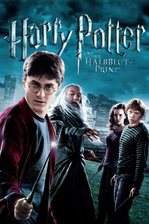

Auszeichnungen: für 1 Oscars nominiert
 gesehen am 09.03.2015
gesehen am 09.03.2015Alternativ: Harry Potter and the Half-Blood Prince
Auszeichnungen: für 1 Oscars nominiert gesehen am 09.03.2015
 
 IMDB-Wertung: 7.6 / 10
IMDB-Wertung: 7.6 / 10  Metascore:
Metascore: 
In Harry Potter und der Halbblutprinz gelangt Harry an ein gebrauchtes Buch für Zaubertränke, das mit zahllosen, äußerst hilfreichen handschriftlichen Kommentaren und Anweisungen versehen ist. Diese helfen ihm bei späteren Gefechten mit Draco. Der frühere Eigner des Buches bezeichnet sich selber als Halbblutprinz. Hin und her gerissen zwischen seiner Bestimmung und seinen Gefühlen für die Menschen, die er liebt, versucht Harry hinter die Identität des Halbblutprinzen und Snapes Verschwörungsplänen zu kommen.
Jahr: 2009
Dauer: 153 Minuten
FSK: 12
Land: England Studio: Warner Home VideoTonspuren: DD5.1 - ,
Untertitel:
Auflösung: 1080p (1920×800) Größe: 15257 MB
Genre: Abenteuer, Familie, Fantasy, Mystery
Regisseur: David Yates
Drehbuch: Steve Kloves, J.K. Rowling
Soundtrack: Nicholas Hooper
Darsteller:
 Daniel Radcliffe als Harry Potter
Daniel Radcliffe als Harry Potter Michael Gambon als Professor Albus Dumbledore
Michael Gambon als Professor Albus Dumbledore Dave Legeno als Fenrir Greyback
Dave Legeno als Fenrir Greyback Jim Broadbent als Professor Horace Slughorn
Jim Broadbent als Professor Horace Slughorn Geraldine Somerville als Lily Potter
Geraldine Somerville als Lily Potter Bonnie Wright als Ginny Weasley
Bonnie Wright als Ginny Weasley Julie Walters als Molly Weasley
Julie Walters als Molly Weasley Rupert Grint als Ron Weasley
Rupert Grint als Ron Weasley Emma Watson als Hermione Granger
Emma Watson als Hermione Granger Helena Bonham Carter als Bellatrix Lestrange
Helena Bonham Carter als Bellatrix Lestrange Helen McCrory als Narcissa Malfoy
Helen McCrory als Narcissa Malfoy Timothy Spall als Wormtail
Timothy Spall als Wormtail Alan Rickman als Professor Severus Snape
Alan Rickman als Professor Severus Snape Oliver Phelps als George Weasley
Oliver Phelps als George Weasley James Phelps als Fred Weasley
James Phelps als Fred Weasley Freddie Stroma als Cormac McLaggen
Freddie Stroma als Cormac McLaggen Jessie Cave als Lavender Brown
Jessie Cave als Lavender Brown Tom Felton als Draco Malfoy
Tom Felton als Draco Malfoy Alfred Enoch als Dean Thomas
Alfred Enoch als Dean Thomas Evanna Lynch als Luna Lovegood
Evanna Lynch als Luna Lovegood Jamie Waylett als Vincent Crabbe
Jamie Waylett als Vincent Crabbe Josh Herdman als Gregory Goyle
Josh Herdman als Gregory Goyle Robbie Coltrane als Rubeus Hagrid
Robbie Coltrane als Rubeus Hagrid Warwick Davis als Professor Filius Flitwick
Warwick Davis als Professor Filius Flitwick David Bradley als Argus Filch
David Bradley als Argus Filch Matthew Lewis als Neville Longbottom
Matthew Lewis als Neville Longbottom Devon Murray als Seamus Finnigan
Devon Murray als Seamus Finnigan Maggie Smith als Professor Minerva McGonagall
Maggie Smith als Professor Minerva McGonagall Afshan Azad als Padma Patil
Afshan Azad als Padma Patil Paul Ritter als Eldred Worple
Paul Ritter als Eldred Worple David Thewlis als Remus Lupin
David Thewlis als Remus Lupin Natalia Tena als Nymphadora Tonks
Natalia Tena als Nymphadora Tonks Mark Williams als Arthur Weasley
Mark Williams als Arthur Weasley Gemma Jones als Madam Pomfrey
Gemma Jones als Madam Pomfrey Ralph Ineson als Amycus
Ralph Ineson als Amycus Katie Leung als Cho Chang
Katie Leung als Cho Chang Jason Isaacs als Lucius Malfoy , uncredited
Jason Isaacs als Lucius Malfoy , uncreditedDatei: X:\7+mehr(A-Z)\Harry Potter\Harry Potter 6 - und der Halbblutprinz (2009, FSK12, 1920x800).mkv seit 15.02.2015
Festplatte: HD Collection-7+mehr(A-Z)+Person
 Es gibt insgesamt 17 Filme in der Gruppe '7+mehr(A-Z)\Harry Potter'
Es gibt insgesamt 17 Filme in der Gruppe '7+mehr(A-Z)\Harry Potter'